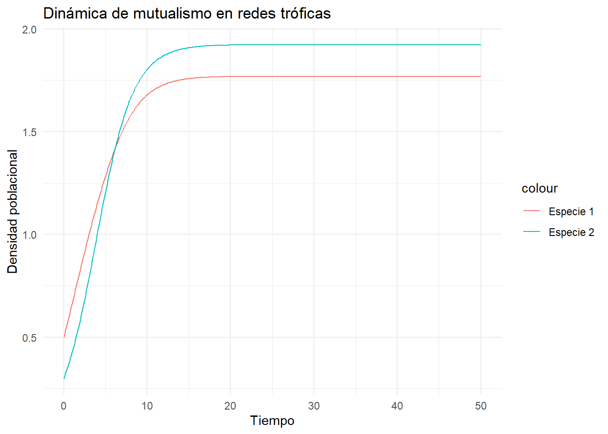
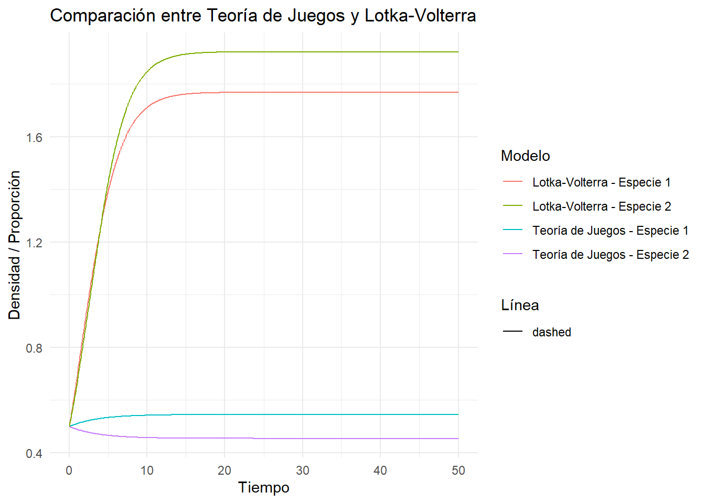
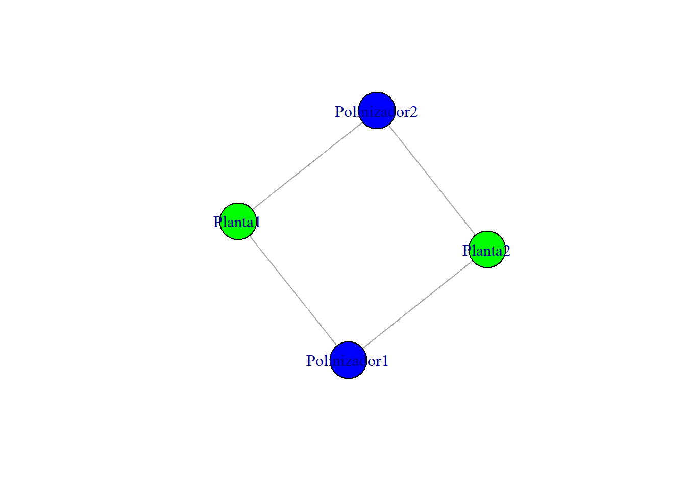

6 Capítulo 6: Mutualismo y Redes Tróficas
El mutualismo, una interacción ecológica donde ambas especies involucradas se benefician, ha sido tradicionalmente modelado en redes tróficas como interacciones positivas bilaterales. En estas redes, las relaciones mutualistas suelen representarse mediante coeficientes positivos en matrices de interacción (por ejemplo, en el modelo Lotka-Volterra generalizado).
Aquí solamente introduciremos el tema de mutualismo de manera introductoria, sin considerar conceptos como mutualismo saturante (tipo Holling/Michaelis–Menten), o sin discutir “mutualismo débil vs fuerte” o condiciones de estabilidad (región de coexistencia, “blow-up”). Dejaremos esos temas para otro capítulo mas avanzado.
Matemáticamente, las interacciones de mutualismo pueden expresarse como:
\[ \frac{dx_i}{dt} = x_i \left( r_i + \sum_{j=1}^n a_{ij}x_j \right) \]
donde \(x_i\) representa la densidad de la especie \(i\), \(r_i\) su tasa intrínseca de crecimiento, y \(a_{ij}\) la influencia de la especie \(j\) sobre \(i\).
Un desafío clave en este enfoque es evaluar la estabilidad del equilibrio cuando las interacciones mutualistas fortalecen la conexión entre especies, aumentando la probabilidad de inestabilidades.
# Cargar librerías
library(deSolve)
# Definir parámetros para un modelo Lotka-Volterra con mutualismo
params <- list(r = c(0.5, 0.4),
a = matrix(c(-0.5, 0.2,
0.1, -0.3),
nrow = 2, byrow = TRUE))
# Definir modelo
mutualismo_model <- function(t, state, params) {
with(as.list(c(state, params)), {
dx1 <- r[1] * state[1] + state[1] * (a[1,1] * state[1] + a[1,2] * state[2])
dx2 <- r[2] * state[2] + state[2] * (a[2,1] * state[1] + a[2,2] * state[2])
list(c(dx1, dx2))
})
}
# Condiciones iniciales y tiempo
state <- c(x1 = 0.5, x2 = 0.3)
time <- seq(0, 50, by = 0.1)
# Simulación
output <- ode(y = state, times = time, func = mutualismo_model, parms = params)
# Graficar resultados
library(ggplot2)
data <- as.data.frame(output)
ggplot(data, aes(x = time)) +
geom_line(aes(y = x1, color = "Especie 1")) +
geom_line(aes(y = x2, color = "Especie 2")) +
labs(title = "Dinámica de mutualismo en redes tróficas",
x = "Tiempo", y = "Densidad poblacional") +
theme_minimal()
6.1 Modelos de mutualismo basados en juegos evolutivos
Desde la perspectiva de la teoría de juegos evolutivos, el mutualismo se modela como un juego donde las estrategias de las especies evolucionan para maximizar su beneficio individual mientras cooperan. Estos modelos suelen usar la dinámica replicadora, que describe cómo las proporciones de estrategias cambian en el tiempo:
\[ \frac{dx_i}{dt} = x_i \left( f_i - \bar{f} \right) \]
donde \(f_i\) es el fitness de la estrategia \(i\) y \(\bar{f}\) es el fitness promedio de la población. Al incluir interacciones mutualistas, se puede analizar cómo la estabilidad y la cooperación emergen en diferentes contextos ecológicos.
Consideremos una matriz de pagos para dos especies donde cada una puede cooperar (C) o no cooperar (NC):
| Cooperar (C) | No Cooperar (NC) | |
|---|---|---|
| C | (3, 3) | (0, 5) |
| NC | (5, 0) | (1, 1) |
Podemos implementar esta dinámica en R para simular la evolución de la cooperación, y compararla con el modelo tradicional GLV.
# Parámetros del juego
# Definir el vector de tiempo
time <- seq(0, 50, by = 0.1)
# Parámetros comunes
r1 <- 0.5
r2 <- 0.4
a12 <- 0.2
a21 <- 0.1
self1 <- -0.5
self2 <- -0.3
# Función de la dinámica replicadora ajustada para dos especies
replicator_dynamics_dual <- function(time, state, params) {
x1 <- state[1]
x2 <- state[2]
# Pagos (análogos a las interacciones de GLV)
pi1 <- params$r1 + params$a12 * x2 + params$self1 * x1
pi2 <- params$r2 + params$a21 * x1 + params$self2 * x2
# Fitness promedio
avg_fitness <- (x1 * pi1 + x2 * pi2)
# Ecuaciones replicadoras
dx1 <- x1 * (pi1 - avg_fitness)
dx2 <- x2 * (pi2 - avg_fitness)
list(c(dx1, dx2))
}
# Parámetros para el modelo replicador
params_replicator <- list(r1 = r1, r2 = r2, a12 = a12, a21 = a21, self1 = self1, self2 = self2)
# Condiciones iniciales
state_replicator <- c(x1 = 0.5, x2 = 0.5)
# Simulación para la dinámica replicadora
output_replicator <- ode(y = state_replicator, times = time,
func = replicator_dynamics_dual, parms = params_replicator)
# Modelo Lotka-Volterra con mutualismo
mutualismo_model <- function(t, state, params) {
with(as.list(c(state, params)), {
dx1 <- r[1] * state[1] + state[1] * (a[1,1] * state[1] + a[1,2] * state[2])
dx2 <- r[2] * state[2] + state[2] * (a[2,1] * state[1] + a[2,2] * state[2])
list(c(dx1, dx2))
})
}
# Parámetros para Lotka-Volterra
params_lv <- list(r = c(r1, r2),
a = matrix(c(self1, a12,
a21, self2),
nrow = 2, byrow = TRUE))
# Condiciones iniciales para Lotka-Volterra
state_lv <- c(x1 = 0.5, x2 = 0.5)
# Simulación para el modelo Lotka-Volterra
output_lv <- ode(y = state_lv, times = time, func = mutualismo_model, parms = params_lv)
# Graficar los resultados
library(ggplot2)
data_replicator <- as.data.frame(output_replicator)
data_lv <- as.data.frame(output_lv)
ggplot() +
geom_line(data = data_replicator, aes(x = time, y = x1, color = "Teoría de Juegos - Especie 1")) +
geom_line(data = data_replicator, aes(x = time, y = x2, color = "Teoría de Juegos - Especie 2")) +
geom_line(data = data_lv, aes(x = time, y = x1, color = "Lotka-Volterra - Especie 1", linetype = "dashed")) +
geom_line(data = data_lv, aes(x = time, y = x2, color = "Lotka-Volterra - Especie 2", linetype = "dashed")) +
labs(title = "Comparación entre Teoría de Juegos y Lotka-Volterra",
x = "Tiempo", y = "Densidad / Proporción", color = "Modelo", linetype = "Línea") +
theme_minimal()
6.2 Polinizadores y plantas en sistemas tropicales
Un ejemplo icónico de mutualismo es la interacción entre polinizadores y plantas, particularmente en sistemas tropicales ricos en biodiversidad. Estos sistemas proporcionan un contexto ideal para estudiar cómo las interacciones mutualistas afectan la estructura y estabilidad de las redes tróficas.
Por ejemplo, Ollerton et al. (2011) documentaron cómo la pérdida de polinizadores afecta la reproducción de plantas y, a su vez, la estabilidad de los ecosistemas tropicales. Simulaciones basadas en datos empíricos han demostrado que una reducción en la diversidad de polinizadores puede desencadenar cascadas de extinciones.
En R, podemos explorar estas interacciones cargando datos reales y evaluando métricas de red, como la conectancia y la modularidad:
# Simulación de una red trófica mutualista
library(igraph)
# Crear red ejemplo
nodes <- data.frame(name = c("Planta1", "Planta2", "Polinizador1", "Polinizador2"),
type = c("Planta", "Planta", "Polinizador", "Polinizador"))
edges <- data.frame(from = c("Planta1", "Planta1", "Planta2", "Planta2"),
to = c("Polinizador1", "Polinizador2", "Polinizador1", "Polinizador2"))
network <- graph_from_data_frame(edges, vertices = nodes, directed = FALSE)
# Calcular métricas
cat("Conectancia:", edge_density(network), "\n")## Conectancia: 0.6666667## Modularidad: 0# Graficar red
plot(network, vertex.color = ifelse(nodes$type == "Planta", "green", "blue"),
vertex.size = 30, edge.arrow.size = 0.5)
6.3 Discusión
¿Qué representa un equilibrio de Nash en el contexto de interacciones mutualistas?
- Respuesta: Es un punto en el cual ninguna de las especies involucradas puede mejorar su “beneficio” (fitness) cambiando unilateralmente de estrategia. En ecología mutualista, esto se traduce en niveles de inversión en cooperación que son estables evolutivamente.
¿Qué papel juegan las redes tróficas al incorporar interacciones mutualistas en su estructura?
- Respuesta: Introducen bucles positivos de retroalimentación que pueden aumentar la estabilidad y diversidad de la red, pero también pueden generar vulnerabilidad si una especie clave se pierde. En TG, esto se refleja como cambios en los payoffs de las estrategias cooperativas.
¿Cómo puede la Teoría de Juegos ayudar a explicar casos en los que un mutualismo se rompe o se transforma en parasitismo?
- Respuesta: A través de dinámicas replicadoras se puede ver que, si los costos de cooperar aumentan o los beneficios disminuyen, la estrategia “defectora” puede volverse más ventajosa, llevando a un colapso del mutualismo o a su transformación en otra relación interespecífica.
6.4 ¿Quieres leer mas?
Bascompte, J., & Jordano, P. (2007). Plant-animal mutualistic networks: The architecture of biodiversity. Annual Review of Ecology, Evolution, and Systematics, 38, 567–593. https://doi.org/10.1146/annurev.ecolsys.38.091206.095818 Bronstein, J. L. (2015). Mutualism. Oxford University Press. Holland, J. N., & DeAngelis, D. L. (2010). A consumer–resource approach to the density-dependent population dynamics of mutualism. Ecology, 91(5), 1286–1295. https://doi.org/10.1890/09-1163.1 Archetti, M., Scheuring, I., Hoffman, M., Frederickson, M. E., Pierce, N. E., & Yu, D. W. (2011). Economic game theory for mutualism and cooperation. Ecology Letters, 14(12), 1300–1312. https://doi.org/10.1111/j.1461-0248.2011.01697.x Bastolla, U., Fortuna, M. A., Pascual-García, A., Ferrera, A., Luque, B., & Bascompte, J. (2009). The architecture of mutualistic networks minimizes competition and increases biodiversity. Nature, 458, 1018–1020. https://doi.org/10.1038/nature07950 McNamara, J. M., & Leimar, O. (2020). Game Theory in Biology: Concepts and Frontiers. Oxford University Press.